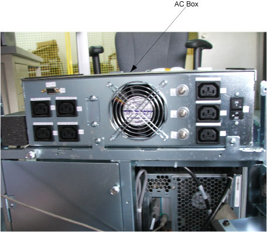
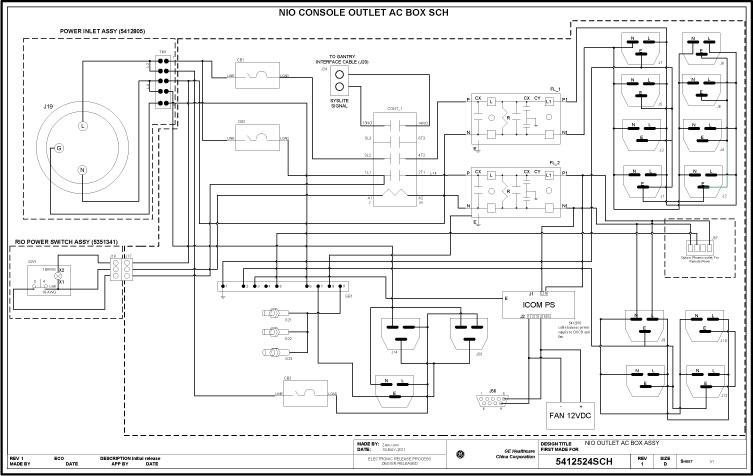
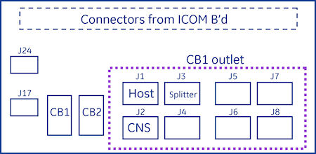
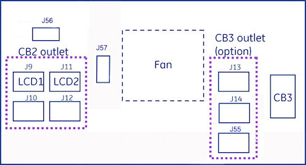

Operating Documentation
Direction 5181178-800, Rev# 16
BrightSpeed Select Service Methods Gen
Module Version 1.0, Version Date 4/13/12
Operating Documentation |
| Last Revised: | 12 August 2011 |
The follow information will assist in confirming if the Operator Console is experiencing a power distribution hardware fault. The following checks should be sufficient in determining if the AC Box located inside the Operator Console (Illustration 1) is suffering from hardware issues at the prescribe Field Replaceable Unit (FRU) level.
Illustration 1: AC Box Location

| ||||
| ELECTROCUTION HAZARD | ||||
| CARE MUST BE TAKEN WHEN WORKING WITH THE POWER DISTRIBUTION AND INSIDE THE CONSOLE. | ||||
| USE PROPER LOCKOUT / TAGOUT PROCEDURES BEFORE REPLACING THE COMPONENTS. |
Before proceeding with the rest of this Troubleshooting Guide, use the following checklist to find possible solutions for general power up problems.
Is the System receiving power?
Is the Main System Disconnect enabled (i.e. A1 Panel or similar)?
Is the PDU power up?
Is the UPS operational (if equipped)?
Is the Console receiving power?
Has Circuit Breaker #7 (CB7) tripped on PDU?
Are the correct phases connected to the Operator Console at the PDU?
Is the Twist-N-Lock Power Cord securely fastened to the Operators Console Bulkhead Panel?
Are the Console Components receiving power?
Is the console power switch on and functioning?
Is the console Power Switch Assembly plugged into J17 on the AC Box?
Has Circuit Breaker #1 (CB1) tripped on AC Box?
| NOTE: | This Circuit Breaker also protects the Power-On Contactor Coil inside the AC Box. The two Accessory Outlets will remain on if CB3 trips. |
See Operator Console Circuit Breaker Table 1 below for more details.
Are only some of the Console Components receiving power?
Has Circuit Breaker #1 Tripped?
- Suspect power problems related to Host PC or CNS.
- Possible failure of internal components of the AC Box (i.e. Line Filter).
Has Circuit Breaker #2 Tripped?
- Suspect power problems related to Monitors.
- Possible failure of ICOM Power Supply..
Has Circuit Breaker #3 Tripped?
- Suspect power problems related to Accessory plugged into these outlets.
Disconnect loads (power cords) from AC Box and reset Circuit Breaker(s).
Are Circuit Breaker(s) still tripping?
Yes
- Suspect component failure internal to AC Box.
- Replace AC Box (FRU).
Are Circuit Breaker(s) still tripping?
No
- Reconnect power cords in a systematic method to determine which console component is over loading the Circuit Breaker(s).
The AC Box in the top compartment of the Operator Console is responsible for distributing AC Power to the components in the Console. Incoming power from the AC Unit (PDU) of the CT System is two (2) phase 208 Vac. This incoming 2 phase AC power is routed through Line Filters and Circuit Breakers and then sent to numerous IEC power outlets in a load balanced manner.
| NOTE: | It is important that the console components be connected to specific power outlets on the AC Box to maintain proper power load balance. If components are not connected to their proper power outlets, a possible imbalance in power distribution may cause circuit breakers to trip when the console is powered on. |
| NOTE: | It is important to understand that the only method to completely remove power from the console is with the removal of the Twist-N-Lock Power Connector on the rear Console Bulkhead Panel. The Circuit Breakers on the AC Box and the Console Power Switch only switch different circuits in and out of the energized state. Power is still present in the AC Box with the Circuit Breakers and Console Power Switch turned off! |
The incoming two (2) phase 208 Vac power is split inside the AC Box into two (2) primary single phase 120Vac circuits. These circuits eventually supply 120 Vac power to all the computers and other components inside the operator console. Refer to AC Box Schematic for more details.
The Operator Console Power Switch energizes a three (3) Pole Contactor inside the AC Box, allowing 120 Vac power to be distributed through line filters and then onto the console components.
Illustration 2: AC Box Schematics

Media File 1: Select the PDF icon below to open the PDF version of the AC Box Schematics

Primary electrical protection for the entire Operator Console is located on the Power Distribution Unit (PDU), Circuit Breaker #7 (CB7). All Circuit Breakers located at the Operator Console are for protecting specific subsections of the power distribution at the console.
| Circuit Breaker | Location | Purpose | Components |
|---|---|---|---|
| CB 1 | Inside console on AC Box | To protect components plugged into the internal AC Power IEC outlets on AC Box. (J1 - J8) | Host PC |
| Splitter, CNS, and Spare | |||
| CB 2 | Inside console on AC Box | To protect components plugged into the internal and external AC Power IEC outlets on AC Box. (J9 - J12) | LCDs |
| CB 3 | Outside console on AC Box at Rear Bulkhead Connection Panel | To protect Accessories plugged into the external AC Power IEC outlets on Bulkhead Panel. (J13 - J14) | Accessories |
| Ex: RPM, Injector |
Illustration 3: AC Box Connections and Circuit Breaker Locations: Front Panel

Illustration 4: AC Box Connections and Circuit Breaker Locations: Rear Panel

| ||||
| THE ACCESSORY POWER OUTLETS ARE ONLY TO BE USED FOR GE HEALTHCARE APPROVED ACCESSORIES! | ||||